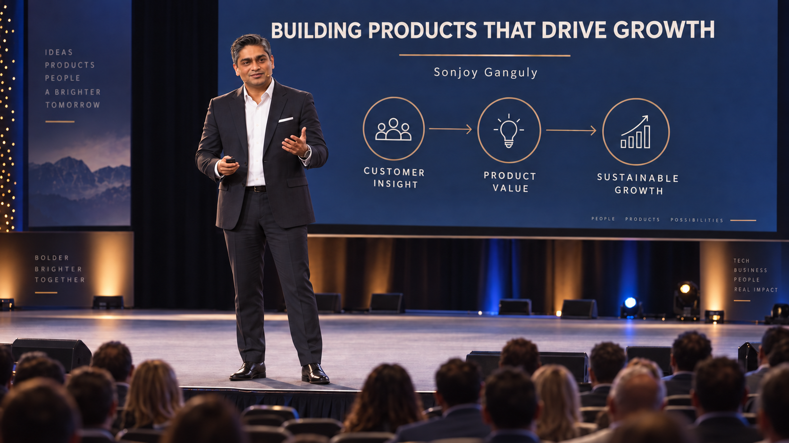

I'm Sonjoy Ganguly — a C-suite executive with 30+ years transforming product, marketing, and revenue organizations across ad tech, martech, SaaS, and financial services. I don't just ship products; I build the strategies, teams, and operating systems that create durable business value.
I've spent my career at the intersection of product strategy, revenue growth, and operational excellence. From Media Ocean & DoubleClick in the early days of digital advertising to CPO/CPTO roles at companies like Madison Logic, MikMak and Digitalzone, I've led organizations through the hardest inflection points — scaling teams from startup to growth stage, turning around stalled product lines, and building go-to-market engines that actually work.
My path has taken me through GroupM/WPP, Deloitte, Deutsche Bank, and Madison Logic — spanning ad tech, martech, financial services, and enterprise SaaS. At each stop, the mandate was the same: take something complex, make it simple, make it profitable, and make it scale. I've held P&L ownership, managed engineering and IT organizations, led marketing and partnerships functions, and served as the connective tissue between the C-suite vision and the execution on the ground.
I studied at NYU Stern School of Business, and I'm a frequent speaker and published contributor on topics including product-led growth, account-based marketing, B2B innovation, and executive leadership.
Most executives specialize. I integrate. My career has been defined by bridging the gaps between product, marketing, revenue, and technology — building organizations where every function operates as a single growth engine.

End-to-end product leadership: vision, roadmapping, discovery, delivery, and lifecycle management. Building product organizations from scratch and transforming existing ones for scale.
P&L ownership with a track record of driving revenue growth through pricing strategy, market positioning, sales enablement, and data-driven GTM execution.
Demand generation, ABM, content strategy, brand positioning, and strategic partnerships. Deep expertise connecting marketing investment to measurable pipeline outcomes.
Leading engineering teams, managing technical debt, driving platform modernization, and aligning technology investment with business priorities.
Building operational frameworks, process optimization, organizational design, and cross-functional alignment that enable companies to scale efficiently.
Identifying market inflection points, leading digital transformation, and cultivating a culture of innovation across the organization. Turning complexity into competitive advantage.
A selective overview of the leadership roles and organizations that have shaped my approach to building products, teams, and businesses.
Participate in funding evaluation for industry leading venture capital funds.
Speak with industry guests on the topics today's product leaders are concerned with.
Consult with leadership and clients on product management best practices.
Led product strategy and execution for B2B demand generation platform. Drove product-led growth initiatives and built cross-functional product organization.
Consult with CEO and product leaders to define product and go-to-market strategy.
Owned product vision, roadmap, and P&L for e-commerce enablement platform serving Fortune 500 brands. Scaled product and engineering teams during critical growth phase.
Built and led the product management organization for the leading ABM platform. Transformed product strategy, launched new data products, and drove category-defining innovation.
Managed definition and execution of new product strategies to help the firm and its clients adopt emerging technologies and create innovative, market-leading solutions at scale.
Led programmatic product strategy and product set transformation. Drove offerings that kept the organization ahead of competitors in the rapidly evolving ad tech landscape.
Foundational roles in product management and technology leadership across digital advertising, financial services, and media — building the cross-industry perspective that defines my approach today.
"Great products aren't built by product teams alone. They're built when every function — marketing, engineering, sales, operations — operates with shared intent and shared accountability."— Sonjoy Ganguly
I host conversations with product executives, founders, and operators about the real work of building products and leading teams — the strategic frameworks, the hard decisions, and the lessons that don't fit neatly into a LinkedIn post.
I also appear as a guest on industry podcasts and speak at conferences on topics including product-led growth, B2B marketing innovation, and executive leadership.
Be a Guest on the Show →Selected articles and thought leadership on product management, B2B marketing strategy, and the evolving landscape of digital business.
How the rise of ABM is redefining how marketers think about accounts, audiences, and engagement.
MarTechA tactical framework for achieving lead-generation volume, velocity, value, and variability.
MarTechHow to navigate the evolving third-party data landscape and future-proof your marketing stack.
MarketingProfsThe strategic shift every B2B marketing organization needs to make — and how to execute it.
MarTechHow to turn content strategy from thought leadership theater into a real demand-generation engine.
MarTechStrategic approaches to compete with larger organizations through smarter marketing execution.
Whether you're looking for executive leadership, advisory partnership, a podcast guest, an industry thought leader, a speaker for your event / meeting, or a collaborator on what's next — I'm always open to a conversation.